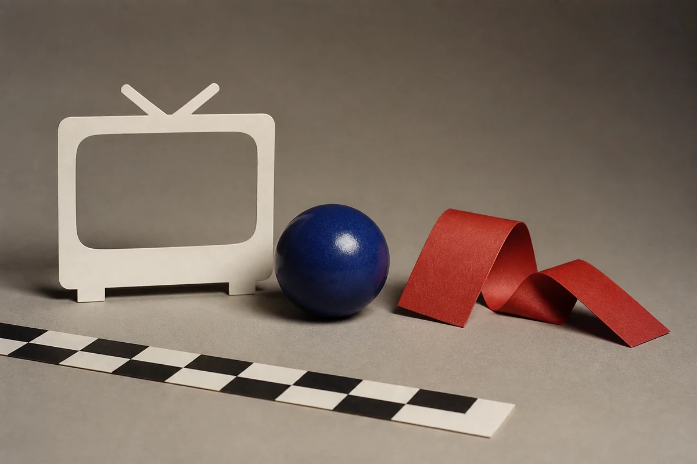

01
Simple
Pick a preset, set intensity and saturation, and keep moving.
Native signal processing for ComfyUI
Ten focused nodes carry image tensors through a native Rust NTSC pipeline. Build convincing tape wear, CRT softness, chroma drift, scanlines, and signal noise without leaving your ComfyUI graph.

Input / cleanReal native output
Every result below came from the compiled extension and the presets in this repository.
Choose the right amount of control
01
Pick a preset, set intensity and saturation, and keep moving.
02
Add scaling, field mode, and deterministic seed controls.
03
Expose the full signal-processing surface in one node.
04—10
Signal · Scanlines · Artifacts · Noise · VHS · Global · Scale
The working path
Python 3.12+ · Rust 1.89+
The installer targets an explicit interpreter and never copies into a machine-specific folder unless you ask it to install.
git clone https://github.com/gvastethecreator/comfyui-ntsc-rs.git
cd comfyui-ntsc-rs
python -m pip install -r requirements.txt
python build_node.py --install